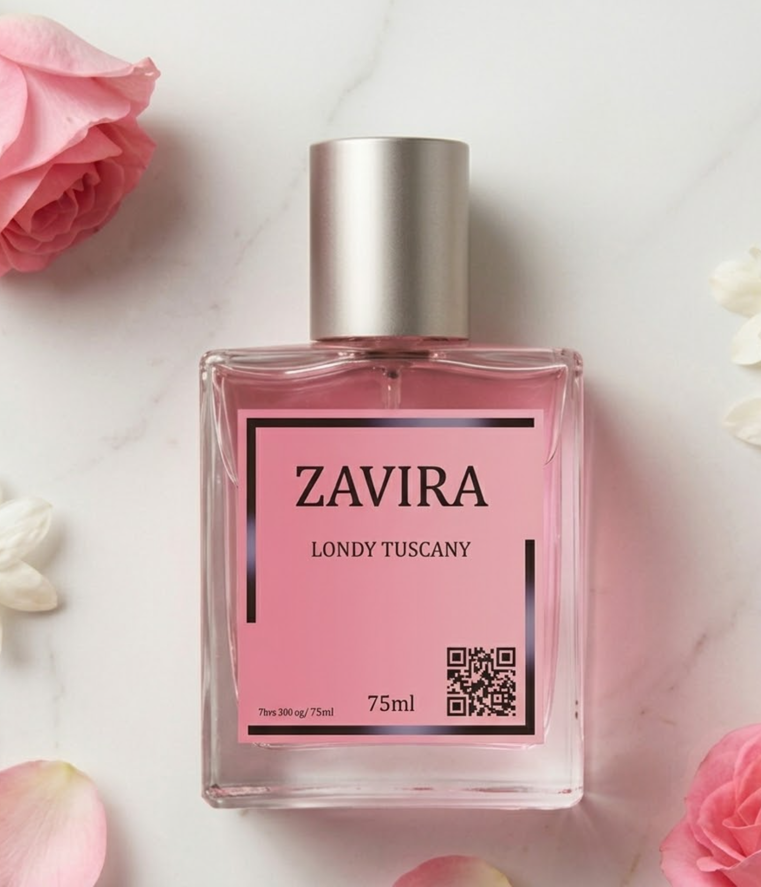

| Description | : |
|
Kategori Pengguna Melihat profil aromanya yang Manis, Bunga, dan Feminin, varian Romantic Wish ini dikategorikan sebagai parfum untuk perempuan (cewe). Karakternya sangat cocok bagi mereka yang ingin menonjolkan sisi romantis, elegan, dan penuh kasih sayang dalam aktivitas sehari-hari maupun acara spesial.